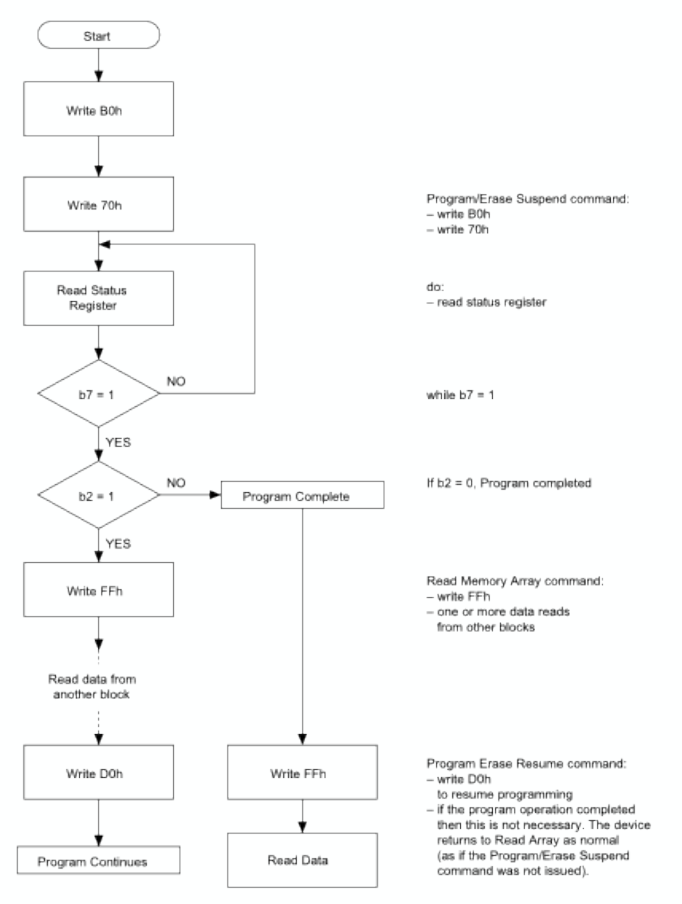

Week 5
High-Z
What should the other devices do when they are not selected?
- acts like unconnected
- High-Z in Tri-state buffer
High-Z - high impedance
- 붙어 있는데 붙어있지 않은 거처럼 동작
Register interface
Communication between the processor and external IPs in the systems.
- External communication from the processor only can be done by memory read and write to a certain address
- Configure and control the behavior of the IPs over registers
- Configuration by setting registers
- Trigger an operation by setting a certain bit
Example: programming procedure of NAND flash memory
- Write the contents to be written in a buffer
- Write a sequence of pre-defined words
- Read status register until completed
- Write word for completion

Raspberry Pi: Peripheral control registers

BMC2837 provides:
- Timers, interrupt, controller
- DMA controller
- PCM / I2S
- I2C master, I2C / SPI slave
- SPI, UART, USB
- PWM, GPIO
Asynchronous serial communication
Eliminates the need for a clock signal between transmitter and receiver
Timing should be maintained by each system


serial protocol - 시간 간격을 얼마나 쪼개둘 것인가
Synchronous serial communication

Data serialization
Counter + shifter register
- Send bit by bit until counter meets the length of data frame

Raspberry Pi SPI

BCM2837 Universal SPI
- Single beat bit length between 1 and 32 bits
- Single beat variable bit length between 1 and 24 bits
- Multi beat infinite bit length
- 3 independent chip selects per master
- 4 entries 32-bit wide transmit and receive FIFOs.
- Data out on rising or falling clock edge
- Data in on rising or falling clock edge
- Clock inversion (Idle high or idle low).
- Wide clocking range
- Programmable data out hold time
- Shift in/out MS or LS bit first